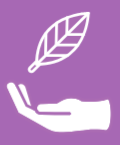

Mjedisi i vendit tim

Ndotja e tokës
Çfarë e dallon Tokën nga planetët e tjerë?
Shënime (opsionale)
Çfarë mund të mbjellim në tokë?
Shënime (opsionale)
115

Çfarë e dallon Tokën nga planetët e tjerë?
Çfarë mund të mbjellim në tokë?
115